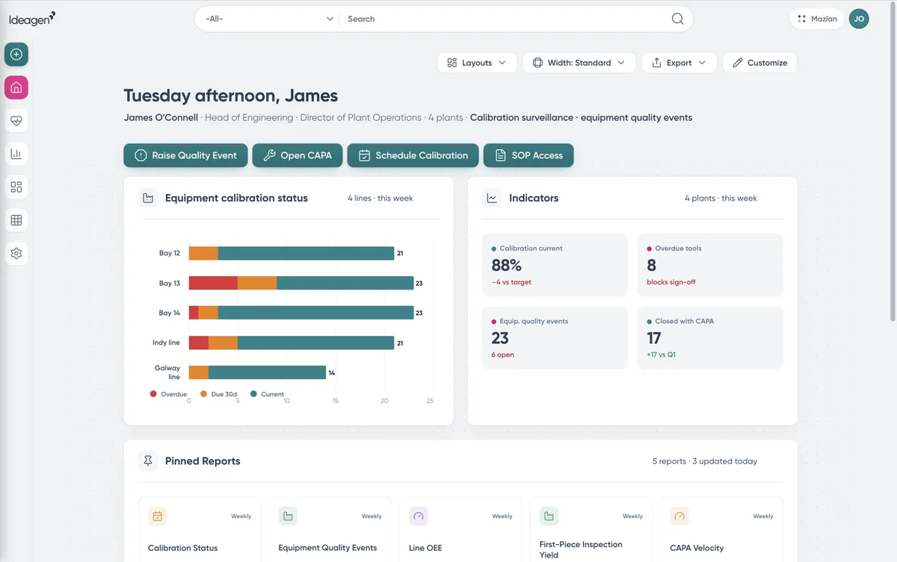

Three projects, what I was responsible for, and what changed
Who says enterprise can’t be pretty?
I led a down-to-the-studs redesign of Ideagen’s flagship EHS application: an agent-first design system, overhauled core features, and an interface that makes a top-shelf product look the part.
A measured result goes here.

Agents that help workers stay safe, informed, and on task.
I led a 0–1 project for one unified app across Ideagen’s EHS portfolio, for workers in far-flung, dirty and dangerous places. Mazlan is placed where it helps people respond to their environment.
A measured result goes here.
Professional Services on demand, on point, ready to help.
Configuration was the company’s biggest bucket of work by man-hours. I designed Mazlan Builder, the agentic tool that hands it to customers, with judgment gates where a person must decide.
Benchmark tasks went from hours to minutes, with no loss of capability.
Image to come
How it’s made
A design system I can show youTokens in three levels, documented from live components. Open the design system
Labs before decisionsThe name board, the halftone and the buttons were each tuned in a lab with saved versions. Split-Flap Lab, Halftone Lab, Button Lab
No build stepHTML, CSS and vanilla JavaScript. Canvas, WebGL 2 and three.js where the piece calls for it.
Built with agentsThis site is built with Claude Code, and every session is logged, including what went wrong.